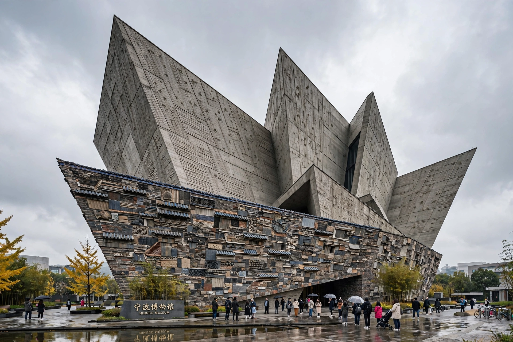

The Ningbo Museum (Chinese: 宁波博物馆) is a museum in Yinzhou District, Ningbo, Zhejiang, China. It opened on 5 December 2008 and focuses on the history and traditional customs of the Ningbo area.

| Ningbo Museum | |
|---|---|
| Established | 5 December 2008 |
| Location | Yinzhou, Ningbo, Zhejiang, China |
| Architect | Wang Shu, Lu Wenyu |
| Type | History museum |
The building was designed by Wang Shu and Lu Wenyu of Amateur Architecture Studio. Wang Shu later won the Pritzker Architecture Prize in 2012, partly recognised for this work. The facade uses the wapan technique, constructed from recycled bricks and tiles salvaged from demolished villages, combined with bamboo-form concrete. The irregular, mountain-like form evokes the local landscape and history.
Permanent exhibitions cover Ningbo from the Hemudu culture (c. 5500 BCE) through the Ming and Qing dynasties, its role as a Maritime Silk Road port, and Ningbo folk customs. Holdings include celadon, bamboo carving, and exhibits on the Ningbo merchants.